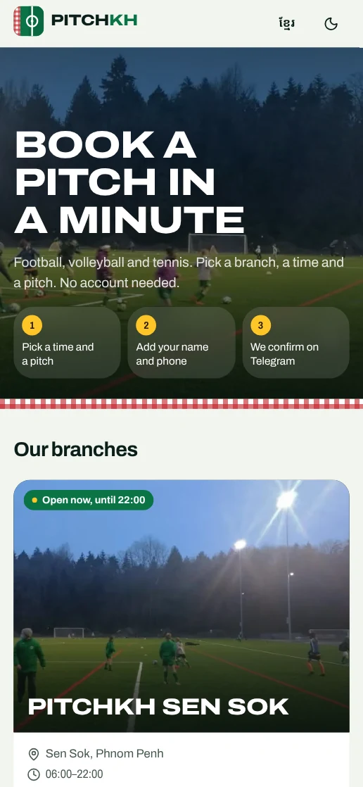
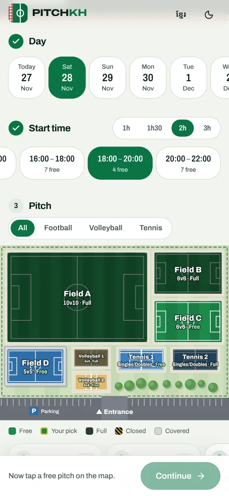
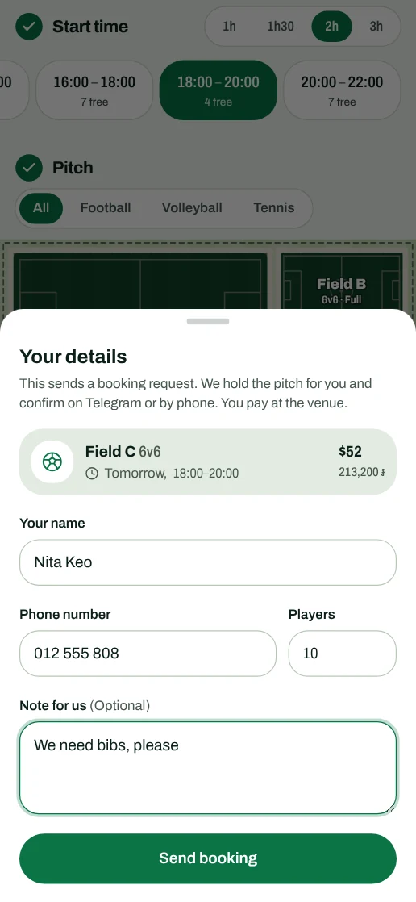
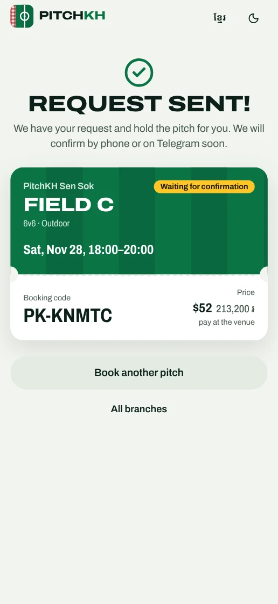
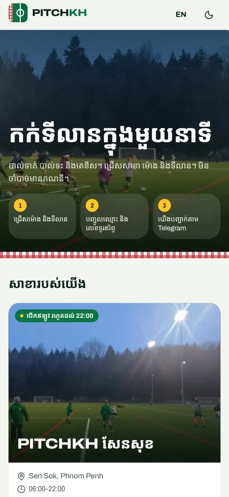

Customer on the website or inside the Telegram bot

1Open PitchKHThree branches, each showing if it's open now and the lowest price.
→

2Pick day and timeChoose a length, then a time block. Each block shows how many pitches are free.
→
 3Pick a pitch
3Pick a pitchTap it on the site map or in the list. Taken pitches are dark; the price updates.
→

4Name and phoneNo account. In Telegram the name fills itself in.
→

5Request sentThe pitch is held. A ticket with a code, and one tap to chat with the owner.
→

+Also in ខ្មែរEvery screen switches to Khmer with one tap.